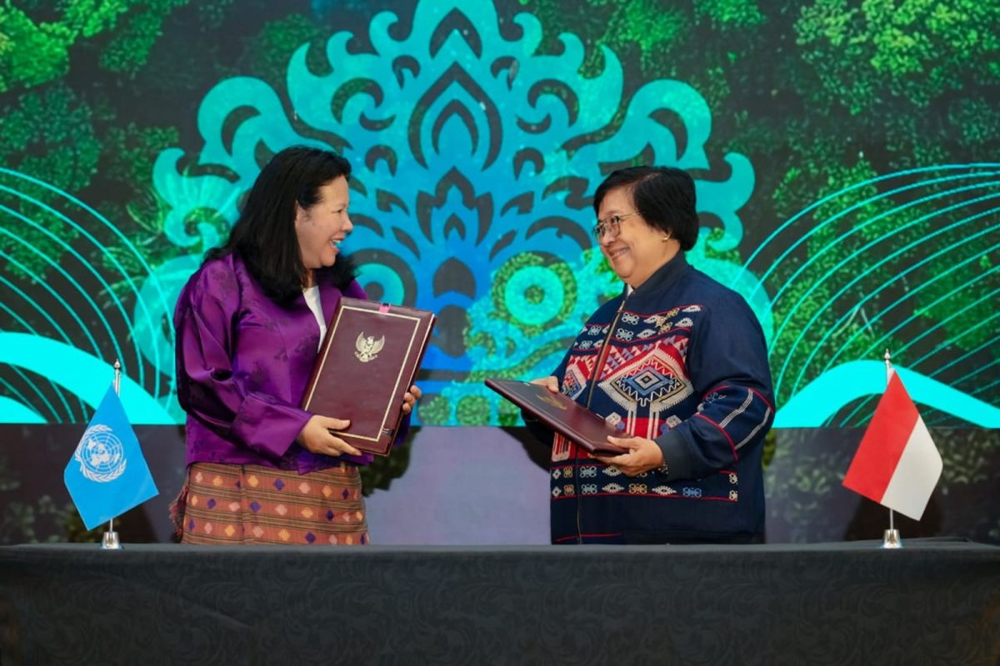
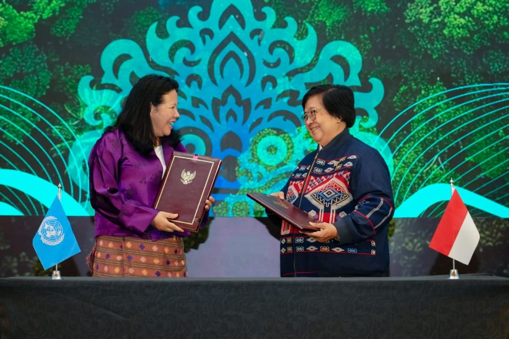

Bertujuan melindungi dan melestarikan ekosistem laut. Lamun (seagrass), mangrove, dan terumbu karang berperan penting dalam menjaga keseimbangan ekosistem global, kehidupan laut, dan menyerap karbon (blue carbon). Indonesia merupakan negara kepulauan dengan 6,4 juta km² wilayah perairan, sehingga menjaga ekosistem laut sangat penting untuk lingkungan, perekonomian, dan kesejahteraan masyarakat pesisir.

 

Indonesia menjalin kerjasama bilateral dengan Australia dalam program Blue Carbon untuk konservasi ekosistem lamun yaitu Road To Ocean20: Workshop on Blue Carbon of Seagrass Ecosystem and Livelihood di Labuan Bajo, NTT, Oktober 2022 untuk membahas rekomendasi kebijakan terkait konservasi lamun. Bentuk kerja sama meliputi penelitian bersama (joint research), pengembangan kapasitas (capacity development), dan transfer teknologi serta pengetahuan (knowledge sharing). Kerjasama ini berawal dari kesepakatan maritim antara Indonesia dan Australia sejak 2017.
Indonesia terlibat dalam kerjasama regional melalui ASEAN Centre for Biodiversity untuk mempromosikan konservasi dan pemanfaatan berkelanjutan keanekaragaman hayati laut di kawasan Asia Tenggara. Indonesia juga berpartisipasi dalam Coral Triangle Initiative on Coral Reefs, Fisheries and Food Security (CTI-CFF) bersama 5 negara lain di Segitiga Terumbu Karang untuk mengelola sumber daya laut secara bersama.
Indonesia terlibat dalam kerjasama multilateral dengan organisasi internasional seperti UNEP (United Nations Environment Programme) untuk program perlindungan ekosistem laut. Indonesia juga berpartisipasi dalam Konvensi Keanekaragaman Hayati PBB (CBD) untuk menyusun strategi dan rencana konservasi keanekaragaman hayati laut.